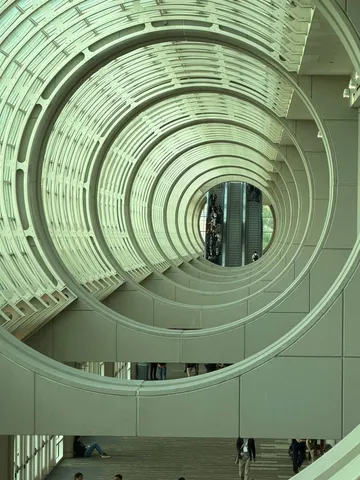

Ну какая ML-конференция без крутых роботов? Вот и американскую NeurIPS 2025 они посетили. В программе:
🦾 Роботизированная рука Tesla, с которой не хочется соревноваться в армрестлинге.
🦾 Та же самая роботизированная рука Tesla, с которой по-прежнему не хочется соревноваться, но которая выглядит парадно.
🛰 Бонус: архитектурные излишества с кубриковским вайбом, который
#YaNeurIPS25
ML Underhood
